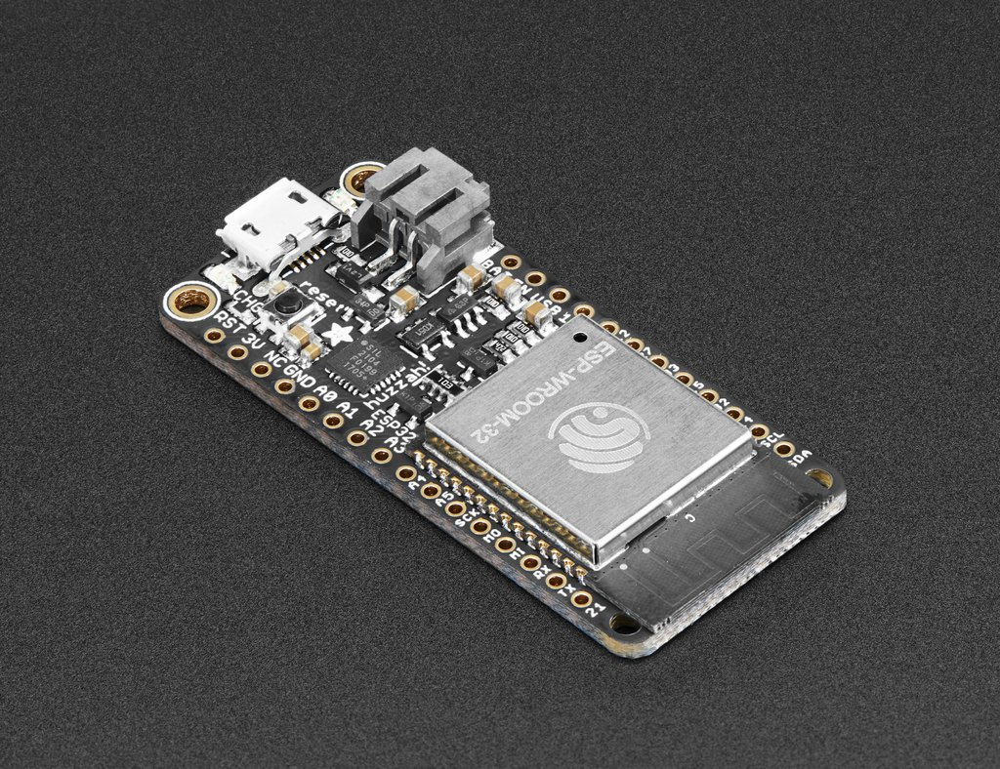

Internet of Things: Week 6
Internet of Things: Week 6
Internet of Things: Week 6
Internet of Things: Week 6
Grab the code here: http://bit.ly/2dSYAYw
- Introdudtion to the esp32
Topics for This Week:
The ESP32
ESP32 Pinout

Install This Driver
HereInstall for you platform
HereConnect an LED, Anode to pin 12 w/resistor, Cathode to GND

In Arduino set the board to Adafruit ESP32 Feather
Upload blink
Connect you laptop to the BOTT network
password: iotpassword
Upload SimpleWiFiServer
Once uploaded open the serial monitor at to 115200 baud
Hit the reset button on the ESP32, it will connect to wifi and display an IP address go to this address in the browser
Connect some touch Pins


Open a terminal
sudo npm install mqtt -g
Open a terminal
sudo npm install mosca bunyan -g
mosca -v | bunyan
Open a second terminal
mqtt sub -t '/hello' -h 'localhost'
Open a third terminal
mqtt pub -t '/hello' -h 'localhost' -m 'hi from me'
Open MQTT_panel in a text editor
set line 2 of index.js to my server
cd in terminal, npm install, noder index.js, go to localhost:3000
Open a third terminal
mqtt pub -t '/hello' -h 'localhost' -m 'My message'
In Arduino install the PubSubClient Library
Upload ESP32TouchInterruptSerial.ino
Upload ESP32TouchInterruptMQTT.ino
Set the Wifi to BOTT and iotpassword
Set the MQTT server to your IP address
Painting Excercise